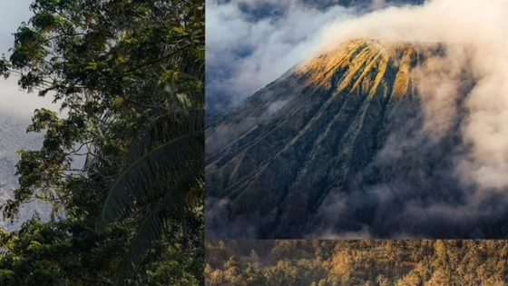
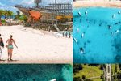
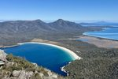
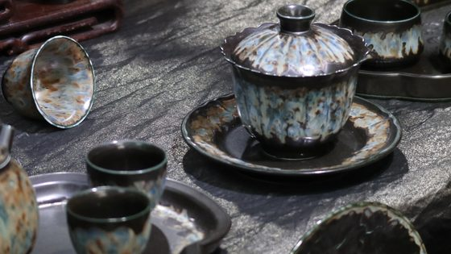
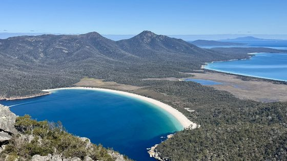
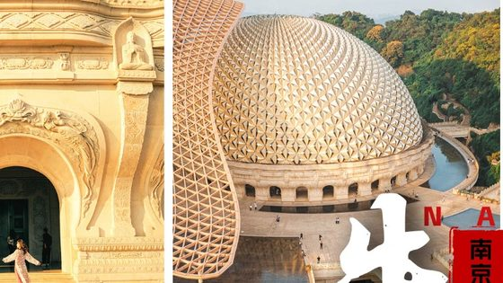
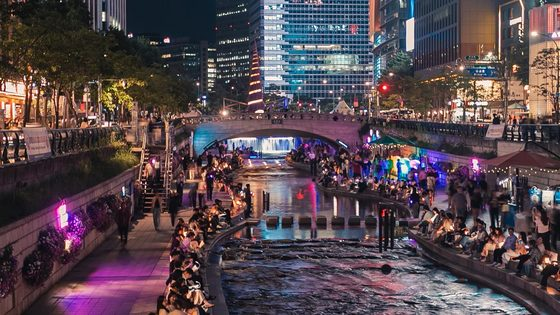

杉杉来迟——新疆中线八天八夜之旅
我们的库尔德宁“目由一旦展开，就无边无际，收不回来了”当黄昏下的车轮驶过安集海大峡谷的褶皱，当恰普其海的冰蓝在挡风玻璃前铺成一片冰原，当骆马穿梭在库尔德宁挂满冰晶的云杉林。
26/Oct.2026


最地道的玩法体验
旅行就要更自在
行程透明省心游
一键全网比价
出签率高服务佳
移动的海上城堡

我们的库尔德宁“目由一旦展开，就无边无际，收不回来了”当黄昏下的车轮驶过安集海大峡谷的褶皱，当恰普其海的冰蓝在挡风玻璃前铺成一片冰原，当骆马穿梭在库尔德宁挂满冰晶的云杉林。

观窑前青 CHINA。瓷都，这是我对景德镇最初的理解。窑火映春光，瓷都藏诗意。春意初绽，清风恰好。一座钧窑流转，满目繁花盛放，装好行囊，带好相机，怀揣满心对瓷都的好奇一张机票。

“三万里征途，孤独和自由”——写在最前面。各位小伙伴大家好，又是我，自从过了5个月时间完成了《极寒假》+《亚美尼亚的蜜月之行》后，马不停蹄的开启下一站 印度尼西亚，原定无敌——机票直签。

同庆长假的暑潮慢慢褪去，十月下旬的牛首山，秋意正缓缓漫过山林。很多人来奔这里，只为打卡顶流的出圈画面，可牛首山的份量，远不止一座雄殿。这里是 江南 牛头禅宗思想的发源地。

【前言】作为一个不追星、不购物的、也不怎么热衷于购物的我来说，首尔从来不是我的旅行目的地首选。2004年第一次来 首尔（当时还叫“汉城”），我对它的印象只有两个字：单调。反差。
【前言】2025年没有像往年一样特意去追秋，反而在无意间邂逅了几次秋。皖南的秋天来得安静，古村的屋檐下挂满晒秋的竹匾，水杉在溪边一排排由绿转红。